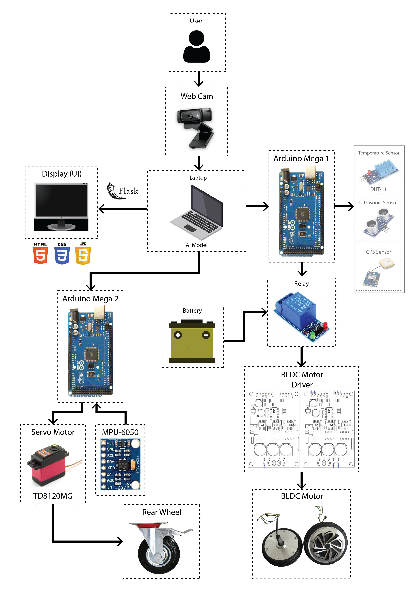

The Savi (smart vehicle) robot project is developed by Electrical Engineering students of Padjadjaran University. The main goal of this project is to produce a robot that can move and navigate automatically and manually to help humans work. Savi robot moves with two BLDC motors, for the front wheels, and a rear wheel that can be controlled by a servo motor. It uses a 24V 12A battery as its power source and a mini PC as the main controller of this robot. The mini PC is connected to Arduino, to control the motors, and other hardware such as sensors, cameras, microphones, and displays.
I have developed a manual robot control system that uses a camera and artificial intelligence. The camera reads the user's hand gestures, which are then processed by AI to control the robot's movement via the motor. The AI model uses the Long-Short Term Memory (LSTM) algorithm alongside Google Mediapipe Holistic. This system can detect ten different controls: forward, backward, stop, on, off, turn left, turn right, turn around, high speed, and low speed.
In addition to hand-gesture control, I have also developed an automatic human-following system for the robot, using Mediapipe Holistic to detect keypoints and estimate the distance between the user and the robot. Based on the calculated distance, the robot can be commanded to move forward, stop, or move backward.
All these systems are integrated into a user interface (UI) with a camera view, user information, camera on and off buttons, and robot control mode buttons. The UI is web-based and built using the Flask framework to connect the AI models.
You can see the results of this project in the video, and I have also attached the code. If you have any further questions, feel free to contact me using the provided contact information.